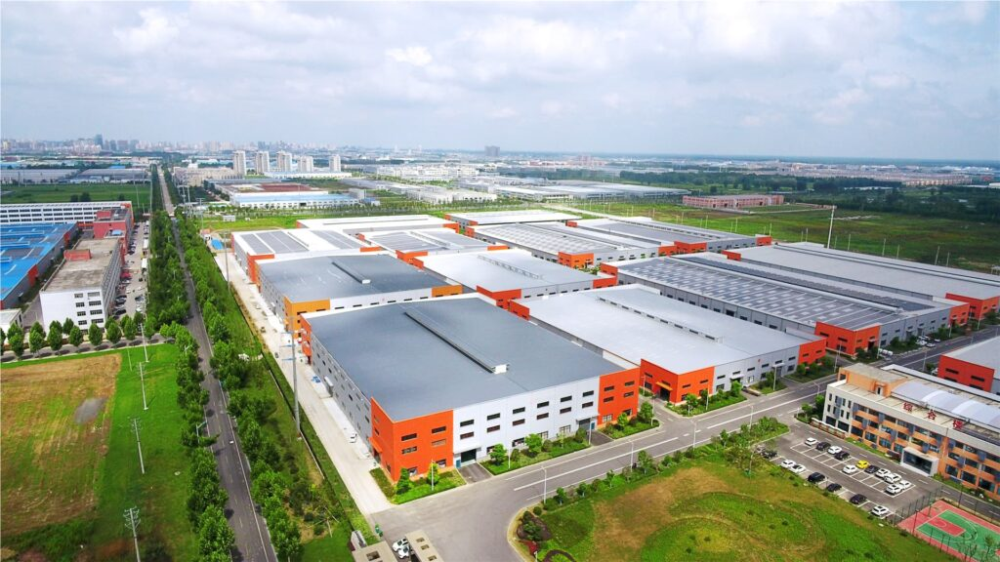
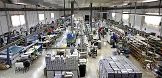

¿Quienes somos?
Somos CDE Textiles, una empresa dedicada a la producción y venta de textiles, especializándonos en la fabricación de ropa de cama de alta calidad. Nos destacamos por ofrecer soluciones textiles tanto para profesionales en la industria como para aquellos que buscan productos de calidad para su hogar. En CDE Textiles, nos enorgullece nuestra dedicación a la innovación, la calidad y el servicio excepcional.
¿Quiénes somos? Somos CDE Textiles, una empresa dedicada a la producción y venta de textiles, especializándonos en la fabricación de ropa de cama de alta calidad. Nos destacamos por ofrecer soluciones textiles tanto para profesionales en la industria como para aquellos que buscan productos de calidad para su hogar. En CDE Textiles, nos enorgullece nuestra dedicación a la innovación, la calidad y el servicio excepcional. Nos apasiona mantenernos a la vanguardia de las tendencias en la industria textil y buscamos constantemente formas de mejorar y ampliar nuestra línea de productos para satisfacer las necesidades de nuestros clientes..
Además, nos comprometemos a ser una empresa ética y ambientalmente responsable. Promovemos prácticas seguras en la fabricación de nuestros textiles y contribuimos positivamente a las comunidades en las que operamos.

Mision
En CDE Textiles, nuestra misión es proporcionar a nuestros clientes textiles de alta calidad, ofreciendo una amplia gama de productos, asesoramiento especializado y un servicio excepcional. Nos esforzamos por ser líderes en el mercado textil, proporcionando soluciones que complementen los proyectos de nuestros clientes en decoración y confort. Aspiramos a ser la opción preferida de profesionales y amantes de la calidad en textiles, contribuyendo al éxito y bienestar de cada uno de nuestros clientes.
Vision
Nuestra visión en CDE Textiles es convertirnos en la empresa líder en textiles a nivel regional, reconocida por la excelencia en productos y servicios. Buscamos ser la primera elección de clientes tanto en entornos profesionales como en hogares, ofreciendo textiles innovadores y de alta calidad que realcen la experiencia de cada proyecto. Nos esforzamos por mantenernos a la vanguardia de la industria, adaptándonos a las tendencias del mercado y construyendo una reputación basada en la confianza y la fidelidad de nuestros clientes. Planeamos expandir nuestra presencia, estableciendo sucursales en diferentes ubicaciones y consolidando nuestra posición como referentes en el sector textil.

Trayectoria
CDE Textiles inició su trayectoria en Ecuador en el año 2010, fundada por un equipo emprendedor con una visión clara de proporcionar textiles de alta calidad al mercado local. Desde el principio, nos enfocamos en establecer alianzas estratégicas con fabricantes reconocidos internacionalmente, asegurando así la disponibilidad de productos de vanguardia y tecnología avanzada.
Con un compromiso continuo con la satisfacción del cliente, nos centramos en brindar un servicio excepcional y asesoramiento especializado. Rápidamente ganamos reputación como una empresa textil confiable y de confianza en el mercado ecuatoriano..
A lo largo de los años, hemos mantenido nuestro compromiso con la responsabilidad social, participando activamente en proyectos comunitarios y promoviendo prácticas sostenibles en la industria textil.
Hoy en día, CDE Textiles es un referente en el mercado ecuatoriano, respaldado por nuestra amplia gama de productos textiles de calidad, servicio excepcional y la confianza ganada de nuestros clientes a lo largo de nuestra trayectoria.